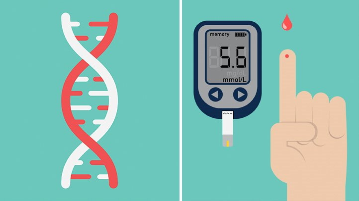

What is diabetes
Diabetes occurs when the body produces insufficient insulin — a hormone that keeps the blood sugar level balanced — or alternatively, does not respond properly to insulin, resulting in a high amount of sugar in the blood.
Type 1 diabetes
Type 1 diabetes is an autoimmune disease.
The immune system attacks and destroys cells in the pancreas, where insulin is made.
It’s unclear what causes this attack.
About 10 percent of people with diabetes have this type.
What are the symptoms of type 1 diabetes?
Symptoms of type 1 diabetes are serious and usually happen quickly, over a few days to weeks. Symptoms can include
- increased thirst and urination
- increased hunger
- blurred vision
- fatigue
- unexplained weight loss
- breath that smells fruity
- dry or flushed skin
- nausea or vomiting
- stomach pain
- trouble breathing
- trouble paying attention or feeling confused
Type 2 diabetes
Type 2 diabetes occurs when your body becomes resistant to insulin, and sugar builds up in your blood.
You can develop type 2 diabetes at any age, even during childhood.
However, this type of diabetes occurs most often in middle-aged and older people.
Type 2 is the most common type of diabetes.
What are the symptoms of type 2 diabetes?
Symptoms of diabetes include- increased thirst and urination
- increased hunger
- feeling tired
- blurred vision
- numbness or tingling in the feet or hands
- sores that do not heal
- unexplained weight loss
How can I lower my chances of developing type 2 diabetes?
Research such as the Diabetes Prevention Program External link, sponsored by the National Institutes of Health, has shown that you can take steps to reduce your chances of developing type 2 diabetes if you have risk factors for the disease. Here are some things you can do to lower your risk:- Lose weight if you are overweight, and keep it off. You may be able to prevent or delay diabetes by losing 5 to 7 percent of your current weight.1 For instance, if you weigh 200 pounds, your goal would be to lose about 10 to 14 pounds.
- Move more. Get at least 30 minutes of physical activity, such as walking, at least 5 days a week. If you have not been active, talk with your health care professional about which activities are best. Start slowly and build up to your goal.
- Eat healthy foods. Eat smaller portions to reduce the amount of calories you eat each day and help you lose weight. Choosing foods with less fat is another way to reduce calories. Drink water instead of sweetened beverages.
References
U.S. National Institute of Diabetes and Digestive and Kidney DiseasesBackground image